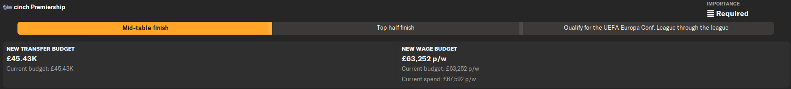

Head over to the staff tab and click on responsibilities, then click on the transfers and contracts section.
Look for the screenshot below.
To help sign players, you should delegate this to your Director of Football.

Now, this doesn't mean that you cannot go and make a bid for a player. All this does is make your Director of Football bid for players they think you should sign. The benefit of doing this is that the players your Director of Football can make a bid for don't have to be scouted. So if you are looking through your scouted players and can't find a striker, and you're also short in that department, then your Director of Football will make an offer for one they know about. Sometimes they are a good signing, but sometimes they are not. This can help if you are managing a club with a short scouting range, as the options you can see are limited. Also, you negotiate the contract for that player and finalise the deal by confirming it, but you also have the power to decline it.
One way to sign players is through a free transfer. There is one method that is very useful, but this only works on certain days of the calendar. This is when players' contracts have expired. So look at your current players' contracts and the day the majority expire, then use this method the day after as other players in your country (that you are managing in) will have also expired. For example, if you are managing in Scotland, their contracts expire on the 31st of May. So you would advance to the 1st of June and do this method, and you can also do it on the 1st of July as that's when players' contracts in England expire. You can also do it on the 1st of January, as that is when players from South America expire.
To do this method, the first thing you do is look for the transfer tab and click on it.
Now go to the Director of Football dropdown menu.
Even if you don't have a Director of Football, you can still use this method.
Now click on 'Suggest Transfer Targets', and the screenshot below should pop up in the middle of the screen.
This is very useful for signing players. With this, you are going to select 'Free Transfer' and 'GK'. Now click suggest.
You should see three goalkeepers appear. Now you are going to do the same for every other position.
Once you have done this, you should get a list of players similar to the one below. Your list might have more, it might have less, depending on what club you are managing.
With this list, you can offer all these players a trial. To do this, right-click on their name. Once you have done this, you should see the menu pop up that is in the screenshot below.
Hover over 'Transfer' and click on 'Offer Trial'. The menu below should pop up.
This is where you select how long you want the player on trial for. You have four options: 1 week, 2 weeks, 3 weeks, and 4 weeks. Offer them any one you want, but I recommend 4 weeks, as they are there for longer, which gives you more time to decide if you want to sign that player. Now, when those players are on trial, they are available for other teams in your country, as they are now part of your squad. So, you could make an offer for someone who had no interest from a rival but ends up going there because you have them on trial.
There are multiple ways to increase your transfer budget, and here are just a few.
One way to give you more transfer budget is to lower your Collective Bonuses. This is just extra money your staff and players get based on where you finish in various competitions. This pops up during the summer window.
Another way is to change the season expectations. This can only be done in January. You do have to be careful, as for example, if you are a newly promoted club and change your season expectations to finish mid-table from avoiding relegation, you can end up getting sacked.